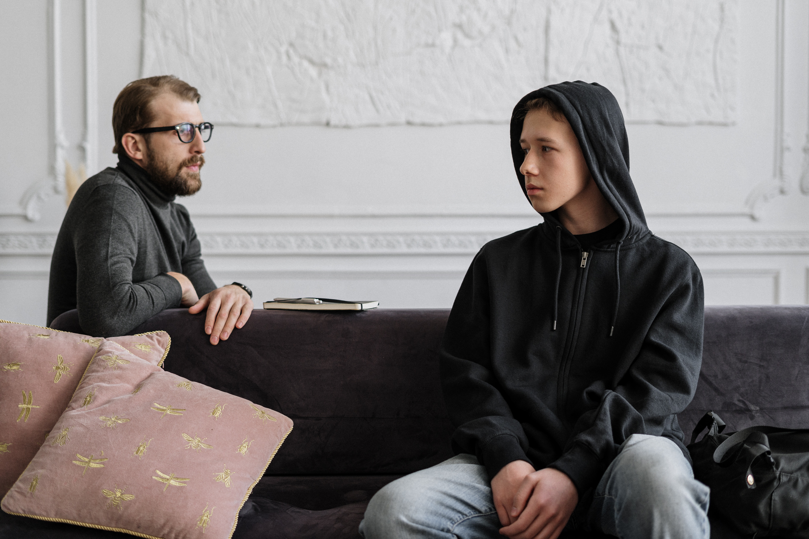

الاسباب | مايو 2021
ما هي أسباب التلعثم ؟
يصعب حصر الاسباب المؤديه الى التلعثم فى الكلام عند الاطفال فلكل كل حاله اسباب تختلف عن الحالات الاخرى فيما يلي مجموعه من اهم الاسباب :
1- اسباب عضويه : ربما ينجم التلعثم عن اختلال في الجهاز العصبي المركزي و اضطراب الاعصاب المتحكمه في الكلام مثل اختلال اربطه اللسان او اصابه المراكز اللكلاميه في المخ عن طريق تلف او نزيف او ورم او مرض عضوي كما قد تنجم عن عيوب في جهاز الكلام المتمثل في الفم واللسان والفكين وسقف الحلق العلوي ووجود خلل في الشفتين. قد يكون التعلثم حصيله لبعض العوامل مثل
- عدم سياده احد جانبي قشره المخ على نشاط الدماغ حيث ان الصراع بين النصفين الكرويين للمخ يهئ حدوث اللجلجه.
- اصابه الطفل بمرض مزمن خاصه في امراض الجهاز التنفسي وذلك للاهميه الجهاز في وظيفه الكلامالاسباب النفسيه والبيئيه. تؤكد العديد من الدراسات على ان اللجلجه تمثل رد فعل مكتسب او متعلم وانها سيكولوجيه الاصل تنتج عن الضغوط البيئيه وتشير نتائج احدي هذه الدراسات الى المناخ البيئي الذي يحيط بالاطفال المتلجلجين والذي يتمثل فيه ان اباءهم كانوا من النوع الذي يسعى الى الكمال ويمليون الى الحمايه الزائده لابنائهم كما انهم يتعاملون معهم بنوع من السيطره والقسوه ذلك القلق كذالك على راحه ابنائهم والقلق الزائد بصفه خاصه على تطورهم اللغوي وكلامهم.
- محاوله الكلام اثناء عمليه الشهيق وليس اثناء عمليه الزفير كما يتكلم الشخص العادي.
- عامل وراثي.
2- الاسباب النفسيه والبيئية :
تؤكد العديد من الدراسات على ان اللجلجه تمثل رد فعل مكتسب او متعلم وانها سيكولوجيه الاصل تنتج عن الضغوط البيئيه وتشير نتائج احدي هذه الدراسات الى المناخ البيئي الذي يحيط بالاطفال المتلجلجين والذي يتمثل فيه ان اباءهم كانوا من النوع الذي يسعى الى الكمال ويمليون الى الحمايه الزائده لابنائهم كما انهم يتعاملون معهم بنوع من السيطره والقسوه ذلك القلق كذالك على راحه ابنائهم والقلق الزائد بصفه خاصه على تطورهم اللغوي وكلامهم
3- المناخ الأسري :
من اهم مسببات التلعثم في حرمان الطفل من الحب والا موجود الاهمال من احد الوالدين اوكلاهما و يؤدي لضعف الانا عند الطفل و يولد لديه مشاعر النقص تلك التي توقعه في صراع اثناء كلامه مما يؤدي الى توتره اثناء الكلام كما ان اعتراضات الوالدين تجاه تعبير الطفل عن مشاعره وافكاره قد تكون سببا في ترسيخ تلك المشاعر والافكار السلبيه التي تؤثر على طلاقه في الكلام
.كما ان سبب ظهور التلعثم او اللجلجه عند الاطفال ليس من داخل الطفل ولكن من الاباء من افكارهم وردود افعالهم تجاه طريقه الاطفال في الحديث الذي يجب ان ناخذ فى الاعتبار و ان اي طفل يفقد كثيرا من الاحرف اثناء الحديث هذا يكون بدايه قلق الاباءالذين يكونوا مستعدين نفسيا ويحملون الاعتقاد باصابه ابنائهم بالجلجه لدرجه ان اي لفظ غير واضح يعتبره الاهل متعلثما
وفيما يتعلق بالجانب الوراثي هناك نسبه كبيره من الاشخاص المصابين بهذا الاضطراب ليس لديهم تاريخ عائلي في اللجلجه وان هذا الاضطراب نشا من ميكانزيمات اخري اكثر من الوراثه..
- التصنيفات
- الاسباب 1
- التعريف 1
- السمات و المظاهر 1
- التشخيص 1
- العلاج 1
- مراحل التطور 1
- مقالات اخري قد تعجبك
-

كيفية تشخيص التلعثم ؟
-
.jpg)
ما هو تعريف التلعثم ؟
-

مراحل تطور التلعثم